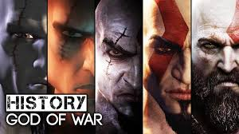

La mayoría de los juegos fueron recibidos de manera muy positiva, Gamerankings dio calificaciones siempre superiores a 90 (excepto en God of War: Ghost of Sparta). Metacritic recibió cada juego de manera muy similar, siendo el Ghost of Sparta el único God of War que no superó los 90. Los usuarios de esta página calificaron con un 86 a dicho juego. Demostrando que fue el juego que más decepcionó a los seguidores de la serie. El juego para teléfonos móviles, God of War: Betrayal, fue igualmente bien recibido por la crítica en general, ya que ofrecía combates muy atrayentes mezclados con acertijos y puzles, lo que caracteriza a la saga